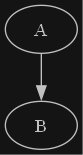

MyST Example HOWTO
Officiel doc https://myst-parser.readthedocs.io/.
code-block
Source
1::::{tab-set}
2:::{tab-item} helloworld.cmd
3```{literalinclude} ../_include/sphinx/myst-example-howto/code/cmd/helloworld.cmd
4:language: bat
5:lineno-match:
6:::
7
8:::{tab-item} helloworld.bash
9```{literalinclude} ../_include/sphinx/myst-example-howto/code/bash/helloworld.bash
10:language: bat
11:lineno-match:
12:::
13
14:::{tab-item} helloworld.ps1
15```{literalinclude} ../_include/sphinx/myst-example-howto/code/ps1/helloworld.ps1
16:language: bat
17:lineno-match:
18:::
19::::
Output
1set "MESSAGE=Hello World"
2echo %MESSAGE%
1#!/bin/bash
2MESSAGE="Hello World"
3echo $MESSAGE
1$MESSAGE="Hello World"
2Write-Output $MESSAGE
admonition
Source
1:::{admonition} Admonition Title
2:class: Tip
3Example of [Admonition](https://myst-parser.readthedocs.io/en/latest/syntax/admonitions.html).
4:::
Output
Admonition Title
Example of Admonition.
csv-table
Source
1:::{csv-table} Docimentation syntax
2:file: ../_include/sphinx/myst-example-howto/csv/data.csv
3:header-rows: 1
4:align: left
5:::
Output
Name |
Url |
|---|---|
ReStructured Text |
|
Markdown |
|
MyST |
math
Source
1The **Black-Scholes** formula (#Black-Scholes):
2
3$$
4 \mathrm C(\mathrm S,\mathrm t)= \mathrm N(\mathrm d_1)\mathrm S - \mathrm N(\mathrm d_2) \mathrm K \mathrm e^{-rt}
5$$ (Black-Scholes)
6
7$$
8 \mathrm d_1= \frac{1}{\sigma \sqrt{\mathrm t}} \left[\ln{\left(\frac{S}{K}\right)} + t\left(r + \frac{\sigma^2}{2} \right) \right]
9$$
10
11$$
12 \mathrm d_2= \frac{1}{\sigma \sqrt{\mathrm t}} \left[\ln{\left(\frac{S}{K}\right)} + t\left(r - \frac{\sigma^2}{2} \right) \right]
13$$
14
15$$
16 N(x)=\frac{1}{\sqrt{2\pi}} \int_{-\infty}^{x} \mathrm e^{-\frac{1}{2}z^2} dz
17 \label{eq:5}
18$$
19
20The **Ornstein-Uhlenbeck** process [](#Ornstein-Uhlenbeck):
21
22```{math}
23:label: Ornstein-Uhlenbeck
24dr_t = -\theta(r_t - \mu)dt + \sigma dW_t
25```
Output
The Black-Scholes formula (#Black-Scholes):
(1)\[
\mathrm C(\mathrm S,\mathrm t)= \mathrm N(\mathrm d_1)\mathrm S - \mathrm N(\mathrm d_2) \mathrm K \mathrm e^{-rt}
\]
\[
\mathrm d_1= \frac{1}{\sigma \sqrt{\mathrm t}} \left[\ln{\left(\frac{S}{K}\right)} + t\left(r + \frac{\sigma^2}{2} \right) \right]
\]
\[
\mathrm d_2= \frac{1}{\sigma \sqrt{\mathrm t}} \left[\ln{\left(\frac{S}{K}\right)} + t\left(r - \frac{\sigma^2}{2} \right) \right]
\]
\[
N(x)=\frac{1}{\sqrt{2\pi}} \int_{-\infty}^{x} \mathrm e^{-\frac{1}{2}z^2} dz
\label{eq:5}
\]
The Ornstein-Uhlenbeck process (2):
(2)\[dr_t = -\theta(r_t - \mu)dt + \sigma dW_t\]
mermaid
Source
1```{mermaid}
2graph TD;
3 A-->B;
4 A-->C;
5 B-->D;
6 C-->D;
7```
Output
graph TD;
A-->B;
A-->C;
B-->D;
C-->D;
graphviz
Source
1```{graphviz} ../_include/sphinx/myst-example-howto/graphviz/example1/example1.dot
2```
1digraph G {
2// sphinx_rtd_dark_mode
3 bgcolor="#141414"
4 node[fontcolor="#c1c1c1",style=filled,color="#c1c1c1",fillcolor="#141414"]
5 edge[color="#c1c1c1",fontcolor="#c1c1c1"]
6
7 A -> B
8}
Output
